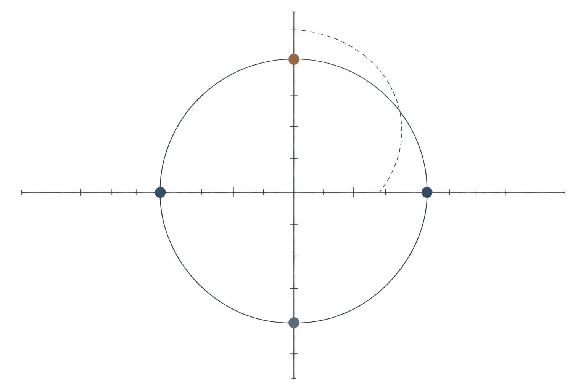

人 · 世界
社会 · 他者
你在其中的坐标
从这里开始
关于哲学主义
不是告诉你该相信什么，
而是帮助你更清楚地思考。
哲学从来没有标准答案，但它能让我们更诚实地面对问题。
我们设计了五组中立的测评，围绕心智、人生、认识、政治与伦理，
帮助你梳理自己的思想倾向，在更大的思想坐标中，看见自己的位置。
人生哲学 · 扩展阅读
十种人生哲学，一组思想坐标
同一个人可以同时靠近多种传统。这里不是替你选择标签，而是提供更多理解生活的语言。